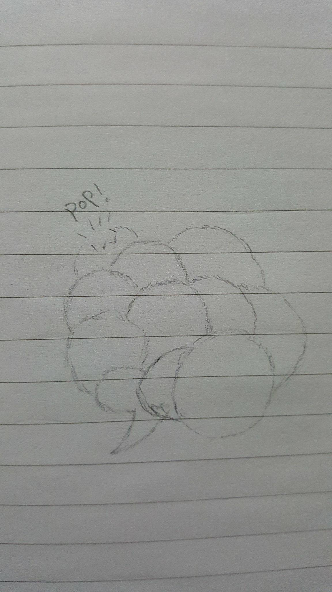
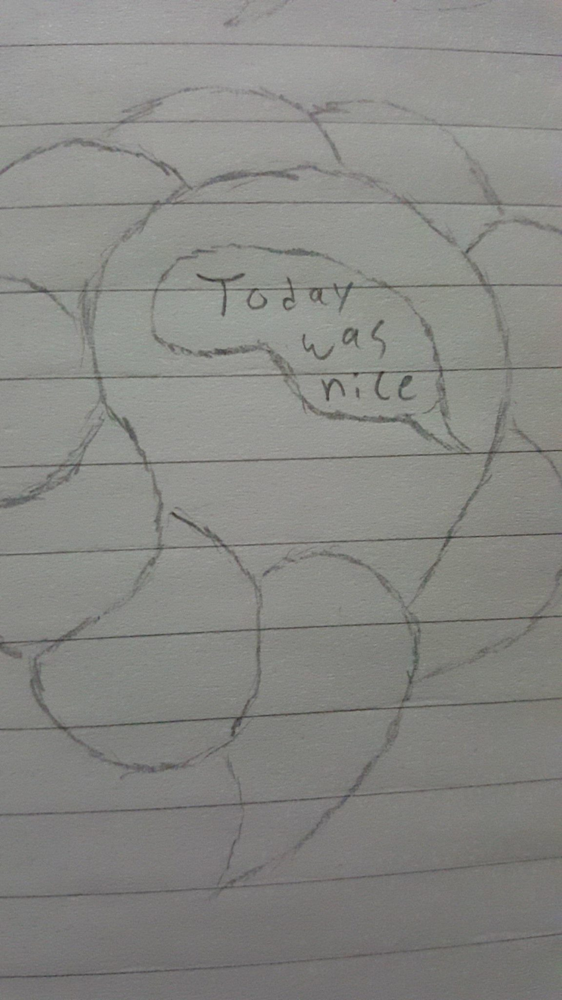

ART 321 Assignment Week Four
Design a net art piece.
The internet allows us the unique ability to interact with people we will never meet, and people we may never encounter again. The net art piece I will design intends to take advantage of this characteristic to allow people to communicate in ways that should be entirely uninhibited. I will allow users to connect to the piece and see a large cloud of speech bubbles from people from around the world and allow them to participate. Any user can choose to contribute a bubble, with the added condition that they will receive one in return.

While there are already many applications that allow users to anonymously contribute, they almost always have the same thing in common: the users receive some sort of gratification from their contributions. Often this takes the form of some sort of counter recording how many times the user's contribution has been liked or disliked. In my piece there will be no incentive other than the opportunity to be completely candid with another person. The bubble will remain for a fixed amount of time before it pops, allowing the users a small window to reply if they feel compelled to do so, but ensuring that the spirit of the piece is not lost. By limiting the users' interactions with each other, the entire point of the piece is to interact with strangers, rather than to meet new people or attempt to make new connections.

(Note that my ability to draw is gravely lacking)
The only measurements needed will be what the user decides to add to their speech bubble. These will be sent to their corresponding partner and then the user will simply wait for their partner to contribute their bubble.